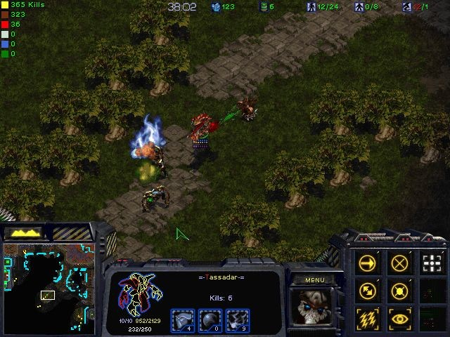
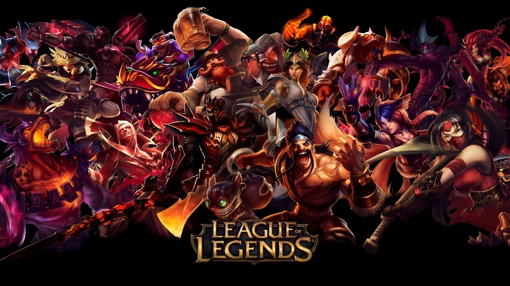

The genre initially started with Aeon of Strife, a custom map for StarCraft where four players each controlling a single powerful unit and aided by weak computer-controlled units were put against a stronger computer. Defense of the Ancients (DotA) was one of the first major titles of its genre and the first MOBA for which sponsored tournaments have been held.
League of Legends is arguably one of the most recent popular MOBAs, despite its toxicity. players assume the role of an unseen summoner that controls a champion with unique abilities and battle against a team of other players or computer-controlled champions. The goal is to destroy the opposing team's nexus, a structure which lies at the heart of a base protected by defensive structures, although other distinct game modes exist as well.
